Увидеть общую картину
Ключевые показатели, динамика и список кампаний на одном экране.
05 / PPC Entourage · B2B SaaS
Спроектировал рабочее пространство для рекламных кампаний на Amazon: общий обзор, управление параметрами, аналитика товара и помощь в контексте задачи.
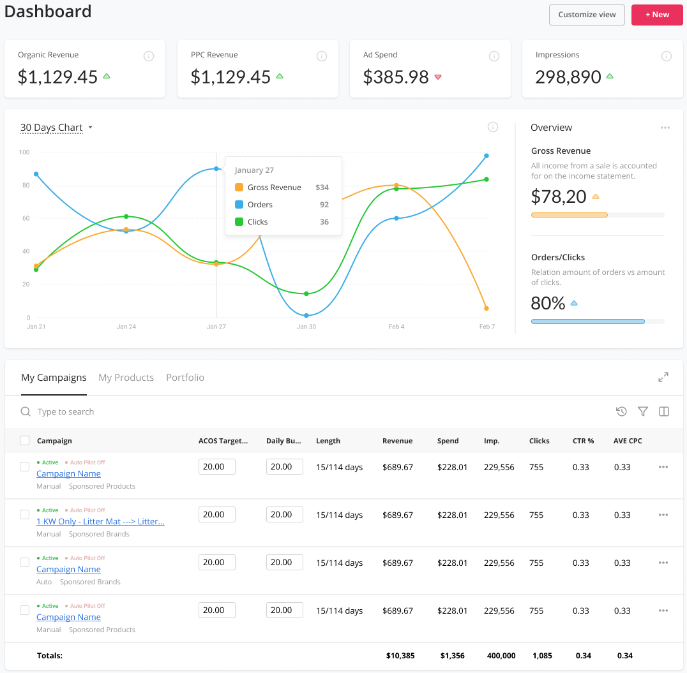
Задача / соединить наблюдение и действие
Рекламному специалисту мало увидеть изменение показателя. Нужно понять, к какой кампании или товару оно относится и какие параметры доступны для изменения.
Я построил интерфейс вокруг перехода от общего к частному: обзор аккаунта → кампания → товар. Аналитика, редактирование и обучение получают разные представления, но остаются частями одного рабочего пространства.
Ключевые показатели, динамика и список кампаний на одном экране.
Статус, целевое значение, бюджет, ключевые слова и журнал изменений.
Параметры товара, рекламная статистика и связанные кампании.
01 / Обзор
На первом уровне я выделил органическую и рекламную выручку, рекламные расходы и показы. Ниже разместил график с подсказкой в точке и таблицу кампаний — чтобы обзор не заканчивался на красивой визуализации.
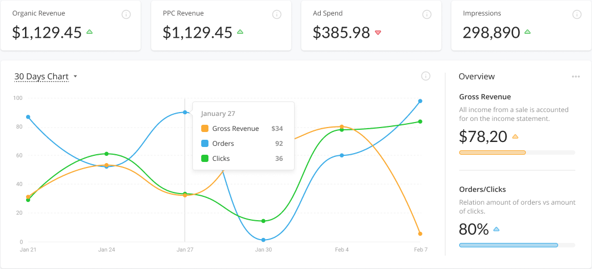
Карточки отвечают на вопрос «каков масштаб?», график — «что менялось?», а таблица ниже помогает выбрать объект для дальнейшей работы.
Названия, справочные значки и пояснения рядом со сводкой создают место для расшифровки метрик, не перегружая основной ряд чисел.
Все числа в кейсе — иллюстративные данные макетов, не результаты проекта. Определения показателей, единицы и шкалы графиков требуют отдельного согласования перед реализацией.
02 / Рабочая таблица
В строке я собрал статус, тип кампании, целевой ACoS, дневной бюджет и показатели результата. Поля параметров находятся рядом с данными, а поиск, фильтрация и настройка колонок вынесены в общую панель.
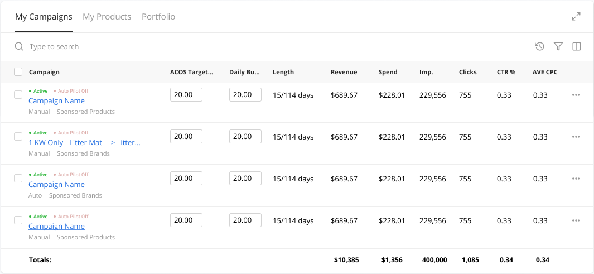
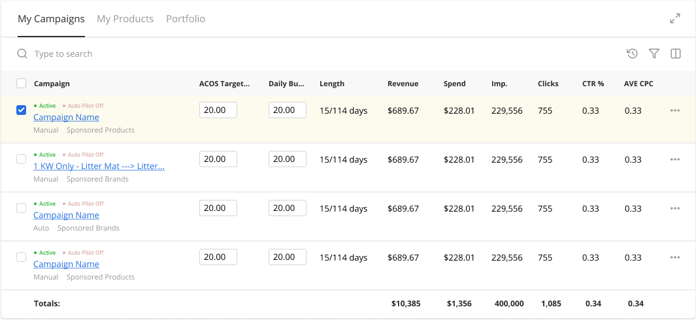
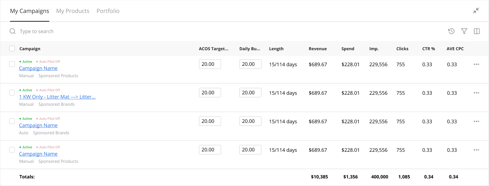
В макете «Active» и «Auto Pilot Off» показаны отдельно. По одной надписи нельзя понять и факт активности кампании, и способ управления ею.
Чекбокс выделяет строку, ссылка открывает кампанию, поля относятся к параметрам. Я визуально развёл эти действия внутри плотной таблицы.
Самое важное здесь — не плотность таблицы сама по себе, а соседство управляемого параметра и результата. При этом правила сохранения и обработки ошибки нельзя считать решёнными только потому, что поле уже нарисовано.
03 / Account Health
Для анализа я разделил общие изменения, эффективность размещений и сравнение кампаний. Над вкладками оставил общий набор фильтров: кампания, портфель, товар. Пользователь видит, к какой выборке относится текущий срез.
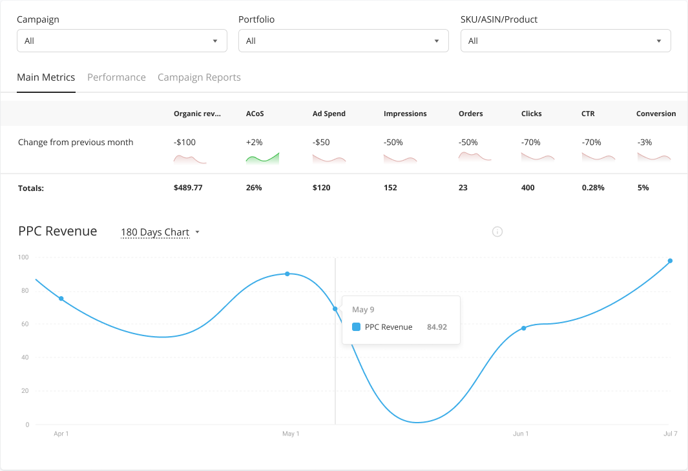
Вопрос 01
Сравнение с предыдущим месяцем расположено над итоговыми значениями. График ниже даёт более подробный взгляд на выбранный показатель.
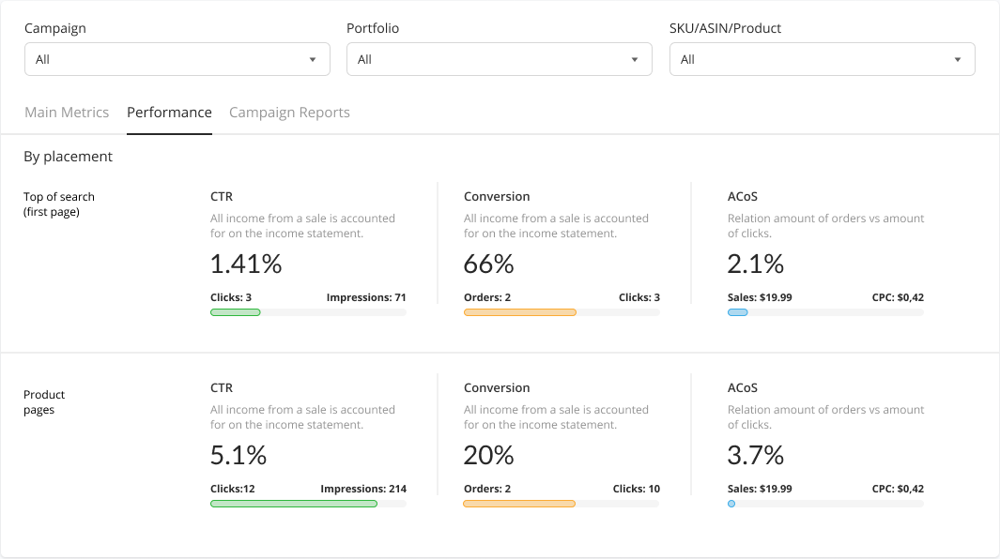
Вопрос 02
Для размещений использована повторяющаяся структура показателей. Одинаковый порядок блоков помогает сравнивать их, а не каждый раз разбирать новую карточку.
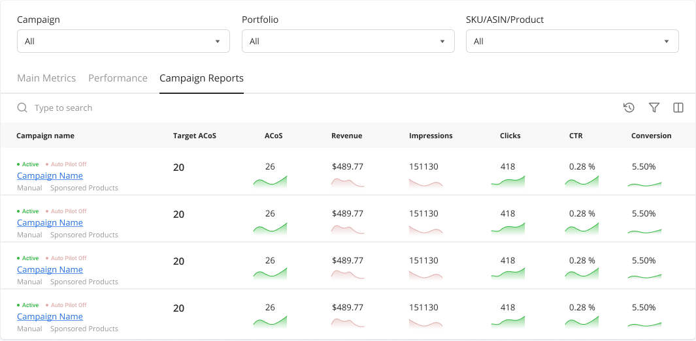
Вопрос 03
Целевой и фактический ACoS стоят рядом. Мини-графики дополняют значения внутри строки, не требуя отдельного большого графика для каждой кампании.
Account Health здесь — название раздела рекламной аналитики в макетах, а не утверждение о проверке соблюдения правил Amazon. Цветовые сигналы и направление «лучше/хуже» для каждой метрики нужно определять отдельно.
04 / Товар и кампания
В карточке товара я собрал параметры себестоимости, цены и маржи, рекламную статистику и список кампаний с этим SKU. Так контекст товара не теряется за общими показателями аккаунта.
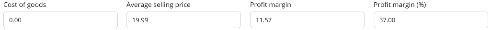
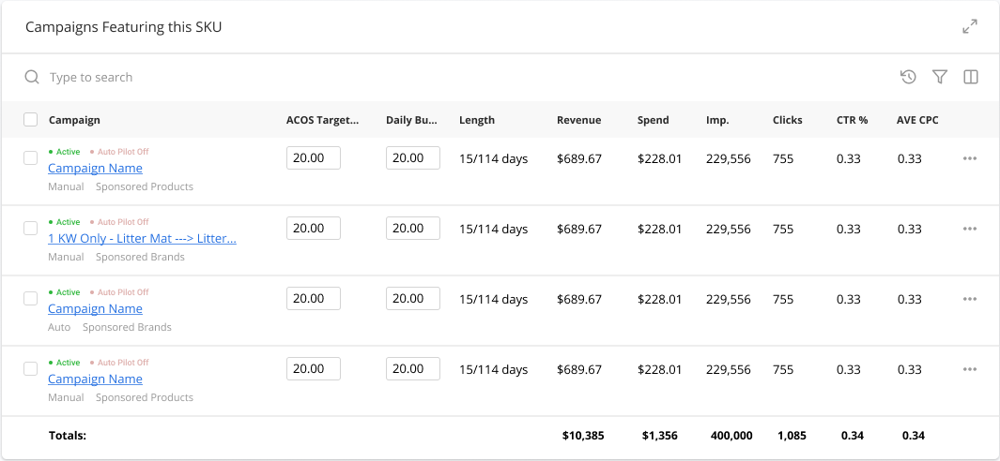
В деталях кампании предусмотрены отдельные таблицы исключающих ключевых слов и журнала. У слова указан тип соответствия; у записи журнала — тип действия и время.
Это место для объяснения того, что менялось вручную и автоматически. По макету нельзя утверждать, что журнал уже покрывает все операции или поддерживает откат.
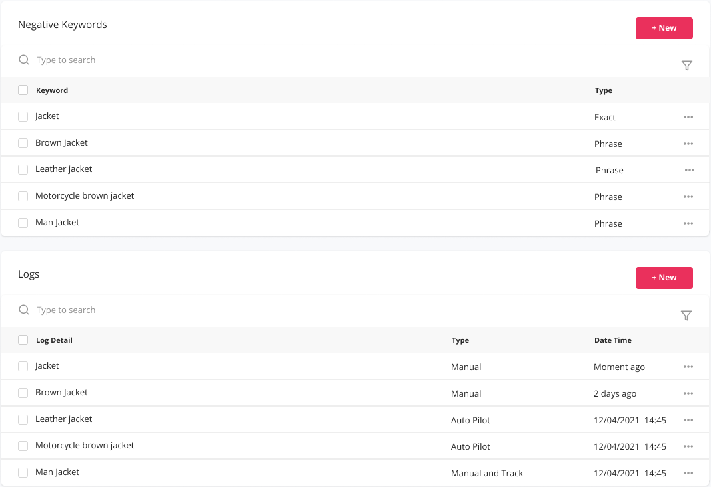
05 / Освоение инструмента
Первый шаг обучения я привязал к целевому ACoS в таблице кампаний. Подсказка не просто рассказывает о разделе: она называет параметр и предлагает следующее действие.
Для более глубокого освоения предусмотрел отдельную библиотеку материалов с фильтрами по функции и сценарию, отметкой просмотра и переходом к дополнительной помощи.
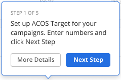
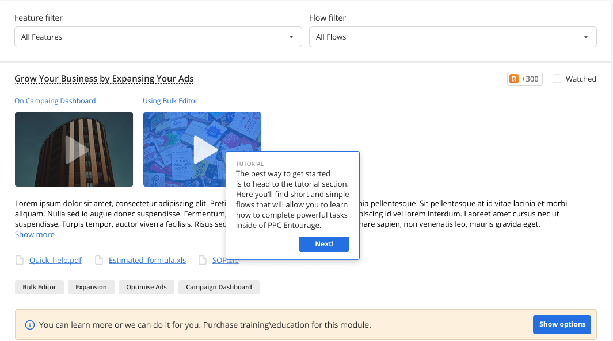
06 / От самостоятельной работы к помощи
В Marketplace я разделил выбор тем консультации, способ оплаты и подтверждение покупки. Выбранные темы и итог находятся рядом с действием покупки, а после неё появляется отдельный статус.
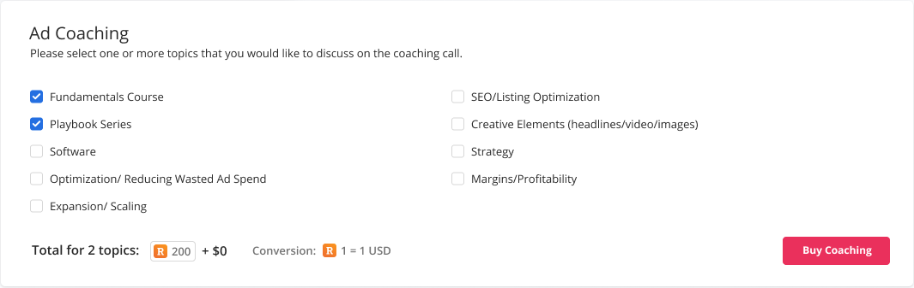
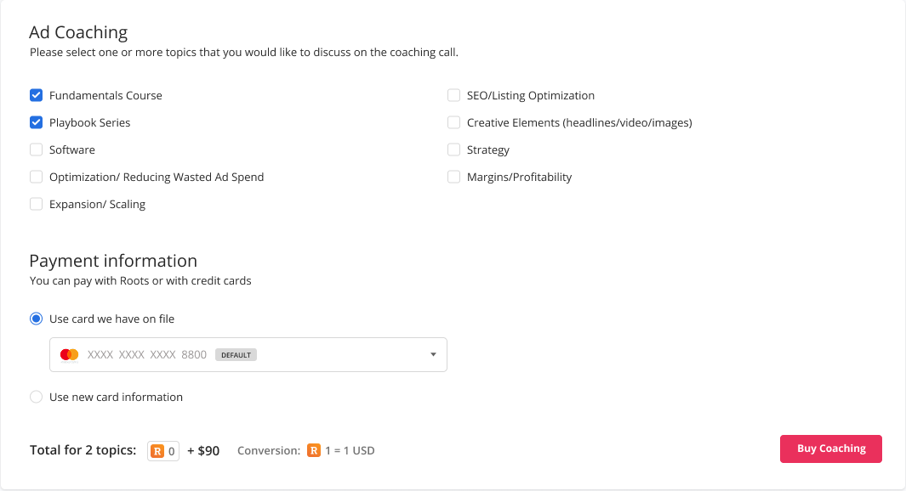
Начисление вынесено в короткое уведомление, а баланс и история — в боковую панель. Это вспомогательная механика освоения и покупки помощи, а не часть отчёта об эффективности рекламы.
Внутренние бонусы обозначены в макетах как Roots. Размеры начислений, курс и коммерческие условия не представлены здесь как действующие правила сервиса.
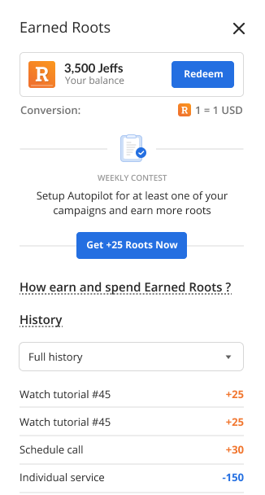
Итог / данные связаны с действием
Я связал общую аналитику, таблицы кампаний, контекст товара и помощь в одной структуре. Работа не заканчивается на цифре: рядом есть объект, параметр, история или способ разобраться в задаче.
Кейс описывает проектирование интерфейса по макетам. Рост выручки, снижение рекламных расходов, реализованная автоматизация и результаты пользовательских испытаний здесь не заявлены.
Главные кейсы портфолио